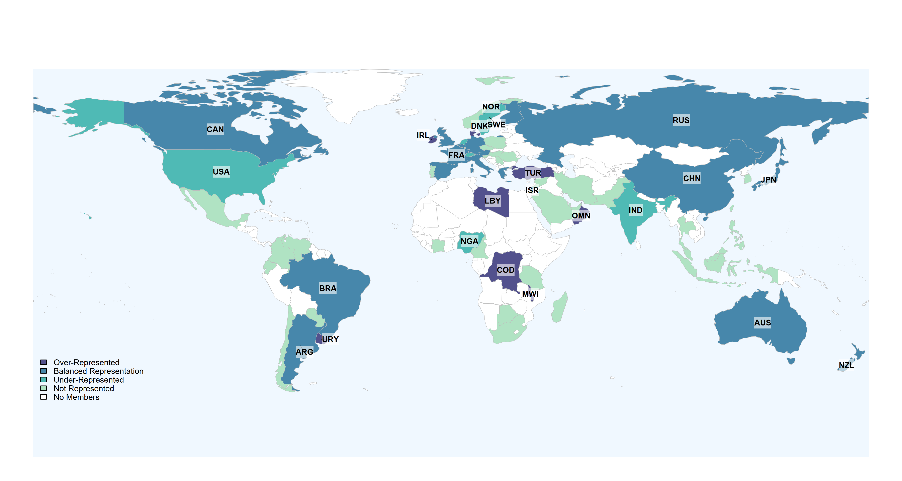
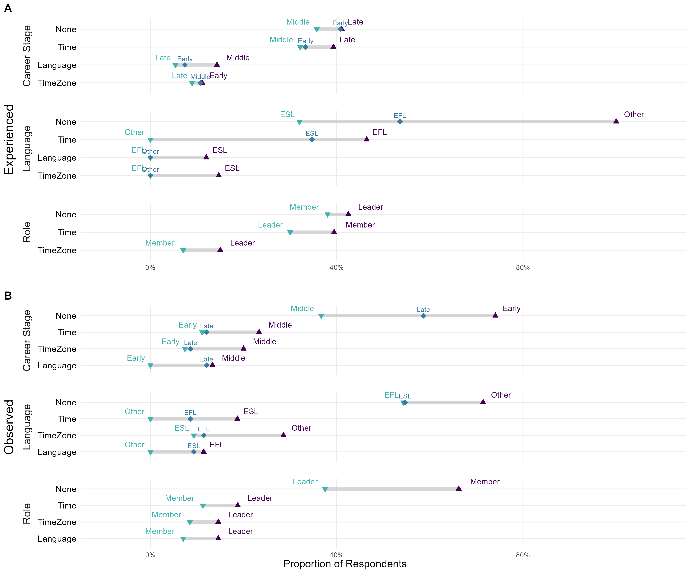
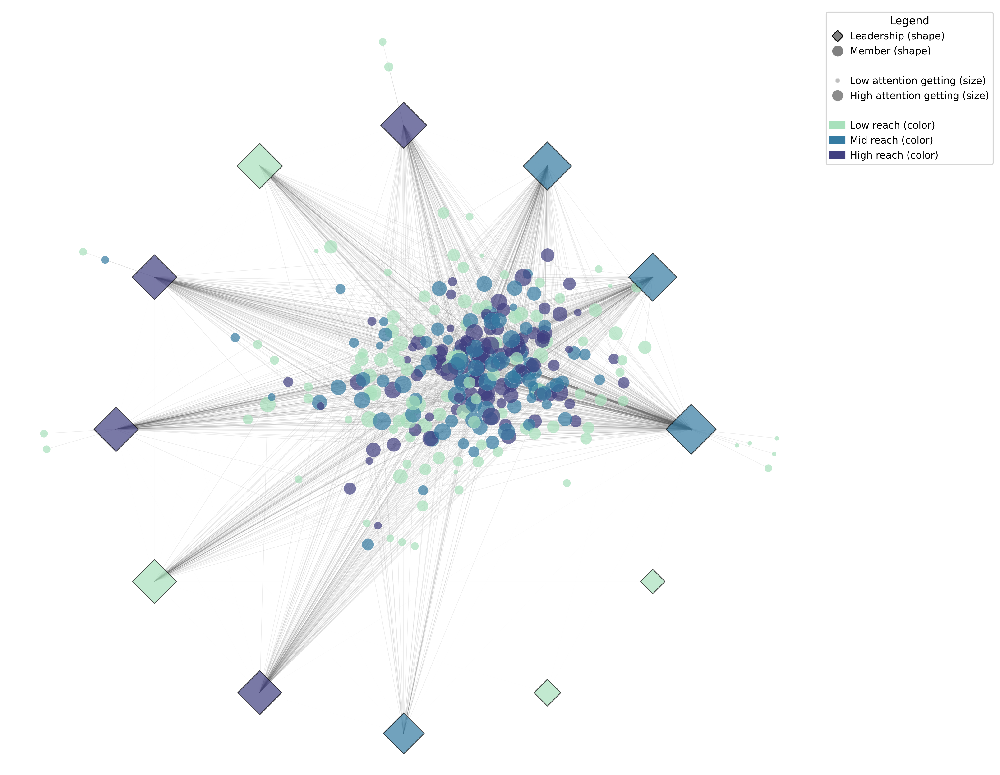
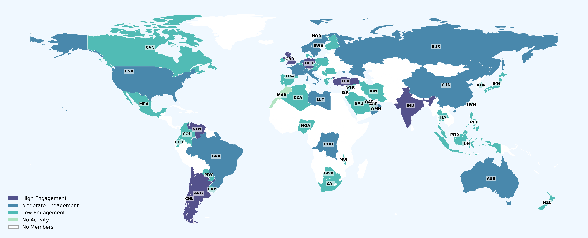
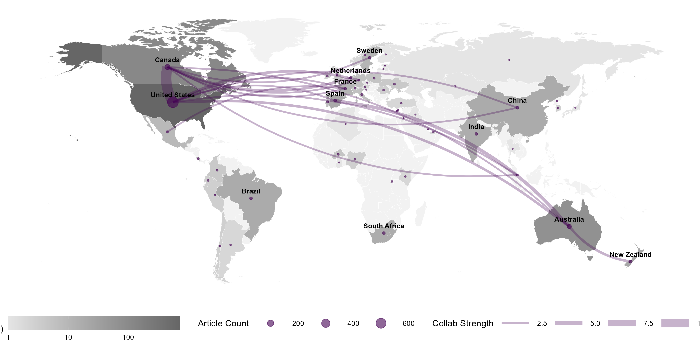
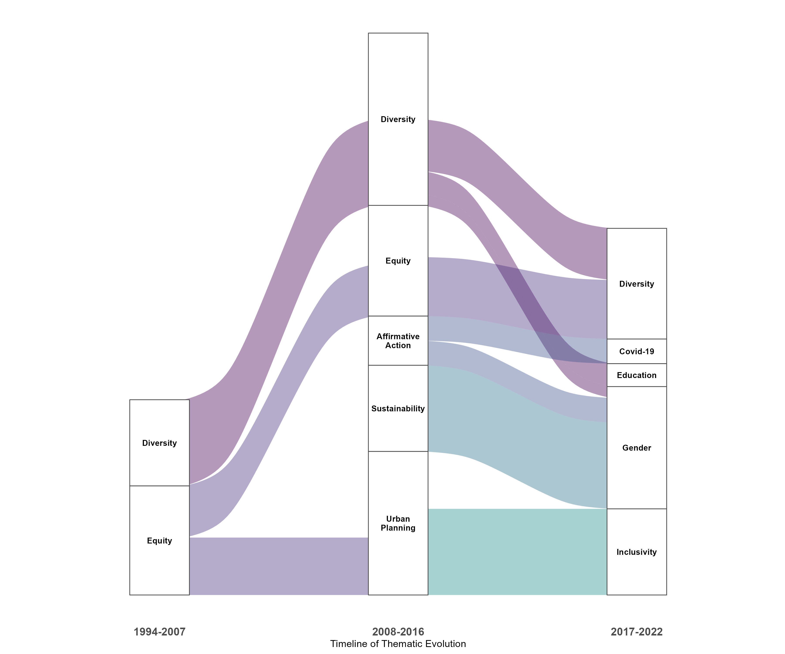

A Mixed-Methods Toolkit for Evidence-Based Diversity, Equity, and Inclusivity Policy in International Organizations
Executive Summary
Problem: DEI frameworks developed in Western contexts routinely fail when applied globally because they are poorly adapted to cultural variation, linguistic diversity, and the colonial legacies embedded in international organizations. Most organizations lack the methodological tools to investigate their own DEI barriers systematically before committing to a policy direction.
Approach: We developed and implemented a mixed-methods toolkit for evidence-based DEI policy in international organizations, grounded in a two-year case study of the Global Consortium for Chemosensory Research (GCCR). The toolkit integrates four components: a structured literature review of DEI barriers in international settings; a case study using member survey and Slack interaction data to assess diversity, equity, and inclusivity within the GCCR; a bibliometric analysis of the DEI action literature from 1994 to 2022; and a set of policy recommendations derived from evidence across all three analyses.
Insights: The literature review found that DEI barriers in international organizations cluster around four themes: pervasive implicit and intersectional bias rooted in colonial structures that privilege Western perspectives; persistent underrepresentation of women and people of color in STEM leadership and editorial boards; organizational resistance to DEI initiatives, particularly from majority-group members who perceive advancement as merit-based; and the failure of Western DEI frameworks when applied globally without adaptation to local legal constraints and cultural norms. Within the GCCR case study, survey data revealed that Global South countries were structurally underrepresented in responses independent of membership size, and that leaders consistently perceived more barriers than members – suggesting that structural position within an organization shapes DEI perception in ways that uniform policy cannot address. Slack network analysis showed role-based asymmetries in attention and centrality, yet overall reciprocity (0.547) indicated that participation flowed broadly across roles rather than concentrating at the top. The bibliometric analysis found that the DEI action literature itself reflects the inequities it studies: international collaboration comprises only 16% of documents, discourse occurs in geopolitical silos, and inclusivity emerged as a distinct scholarly theme only in 2017–2022.
Significance: The toolkit is a first-of-its-kind data-driven methodology for implementing DEI at international scale. Each policy recommendation is tagged to evidence from the literature review, case study, and bibliometric analysis and is designed to help move organizations from performative statements to accountable action plans with measurable metrics.
Key Findings
The literature review identified four structural barriers to DEI in international organizations: implicit and intersectional bias rooted in colonial legacies, persistent underrepresentation in STEM leadership, organizational resistance particularly among majority-group members, and the failure of Western frameworks when applied without cultural adaptation.
The case study analysis revealed structural patterns across all three DEI dimensions: geographic underrepresentation concentrated in the Global South, time and language as the dominant equity barriers, and role-based asymmetries in participation that nonetheless showed broad network reciprocity.
The DEI action literature has grown rapidly (14.74% annually) but remains geopolitically siloed, with international collaboration at only 16% of documents and inclusivity emerging as a distinct theme only in 2017–2022.
Policy recommendations organized by DEI pillar – with evidence tags (literature, survey, Slack, bibliometrics) and implementation metrics – provide a replicable and accountable framework for international organizations.
Hoover, K.C., Kumar, R., Hartig, R., Rohlfs Dominguez, P., Baguma, M., Joseph, P.V., & Koyama, S. (in review). A mixed-methods toolkit for evidence-based diversity, equity, and inclusivity policy in international organizations. Diversity and Inclusion Research.
Research Goal
Develop and evaluate a replicable mixed-methods toolkit for investigating DEI barriers and implementing evidence-based DEI policy in international organizationsacross four analytical components: literature synthesis, case study, bibliometrics, and policy development.
Mixed Methods and Metascience Findings
What does the literature tell us about DEI barriers in international organizations?
The literature review identified four major themes shaping DEI in international settings. Bias – explicit, implicit, and perceptual – operates across demographic categories including gender, race, age, socioeconomic status, sexual orientation, and ability, compounded by intersectionality. Colonial structures continue to privilege Western nations and perspectives in science, producing geopolitical hierarchies in research production, journal editorial boards, and leadership expectations. DEI initiatives frequently fail due to internal organizational resistance, particularly from majority-group members who perceive career advancement as merit-based and find the benefits of DEI engagement unclear. Finally, frameworks developed in Western contexts cannot be applied globally without adaptation – local cultural norms, legal constraints on data collection, and power structures vary substantially across member countries.
What do GCCR data reveal about diversity, equity, and inclusivity?
Geographic Diversity
The map reveals a polarized pattern: 51% of member countries (n=34) had no survey representation and the majority of non-responding countries were in the Global South. Only 27% of countries achieved balanced representation. The Representation Ratio was not associated with membership size (r=-0.266, p=0.144), confirming that low response from Global South countries is a structural pattern, not a function of smaller membership. The USA was an outlier in the under-represented category – large membership, fewer responses than expected.
Figure 1. Geographic representation of survey responses relative to GCCR membership by country.

Interpretation: The polarized pattern of representation – with non-response concentrated in the Global South and independent of membership size – indicates a structural gap that cannot be addressed through outreach alone.
Equity: Barriers to Participation
Time is the dominant barrier across all demographic groups in both experienced (Figure 2A) and observed (Figure 2B) barrier reporting. Most members report not experiencing barriers, with the exception of ESL speakers, who flag language as a significant obstacle. Two patterns stand out. Leaders consistently observe more barriers than members – structural position within the organization shapes DEI perception. Middle career stage members observe more barriers than early or late career stage, possibly reflecting a window of greater organizational engagement. No barriers reached significance for experienced barriers; role and career stage were significant for observed barriers.
Figure 2. Divergence in reported barriers to equity by demographic group.

Interpretation: Time dominates as a barrier across all groups, but the consistent gap between leader-observed and member-experienced barriers signals that those with structural visibility are better positioned to detect inequities than those who experience them.
Inclusivity: Participation Patterns
The network shows a clear hub-and-spoke structure. Leaders occupy the periphery with substantially higher Attention Getting than members (mean 844.67 vs. 37.71), and betweenness centrality confirms leaders serve as primary bridges across the network. Gini coefficients indicate high inequality in attention getting overall (0.670), with Members showing greater within-group inequality than Leaders (0.623 vs. 0.339). Not all leaders function as hubs equally – variation in leader node size and color indicates differentiated engagement levels within the leadership cohort.
Figure 3. Directed interaction network for GCCR Slack public channels – equity.

Interpretation: The hub-and-spoke structure confirms that information flow is structurally dependent on a small leadership cohort, with high inequality in attention getting across both leaders and members.
Figure 4. Directed interaction network for GCCR Slack public channels – inclusivity.
Despite role-based asymmetries in attention getting, overall network reciprocity (0.547) indicates that more than half of all interactions were reciprocated. Figure 4A shows no clear role-based clustering by attention seeking and reach, suggesting members and leaders occupy similar positions in reciprocal engagement. Figure 4B stratifies users into Broadcaster, Balanced, and Receiver tiers: high attention-seeking nodes appear across all tiers rather than concentrating in the Broadcaster tier, and cross-tier edges confirm that participation flows across engagement levels. The overall structure supports an inclusive interaction pattern despite structural hierarchy.

Interpretation: Despite the structural asymmetry shown in Figure 3, the absence of role-based clustering in attention seeking and reach, and the presence of cross-tier edges, support an inclusive interaction pattern within an unequal structure.
Slack participation across 62 countries is uneven but geographically distributed rather than regionally concentrated. High engagement countries (n=9) include Turkey, Germany, Israel, the UK, India, and Argentina. The USA and Netherlands fall in the moderate engagement band. Most countries (n=37) are low engagement, concentrated in Western and Northern Europe, East Asia, and the Global South. Participation Ratio was not associated with sub-population size (r=0.188, p=0.148), confirming that engagement patterns are independent of Slack presence by country.
Figure 5. Geographic representation of Slack participation.

Interpretation: Participation is globally distributed rather than regionally concentrated, and its independence from sub-population size suggests engagement is driven by individual behavior rather than national membership share.
What does the bibliometric analysis reveal about the DEI action literature?
The collaboration network visualizes both the global reach of DEI scholarship and its structural limits. Research density is concentrated in North America and Australia, with secondary ties to several European countries, China, New Zealand, and Mexico. International co-authorships comprise only 16.17% of documents, and several highly productive regions – parts of Africa, South America, and Asia – remain disconnected from dominant collaboration clusters. The pattern suggests that DEI action plans are a global concern but that the scholarly discourse on them occurs in geopolitical silos, mirroring the structural inequities the field seeks to address.
Figure 6. Bibliometrics analysis – world collaboration network map.

Interpretation: The concentration of collaboration in North America and Australia – with productive regions in Africa, South America, and Asia largely disconnected – means the scholarly discourse on DEI replicates the geopolitical inequities it aims to study.
Figure 7. Thematic evolution of DEI action literature across three periods.
The Sankey diagram traces thematic continuity and emergence across three periods. The field began with two foundational themes – Diversity and Equity – then fragmented in the middle period (2008–2016) with Urban Planning emerging as a major disciplinary contributor, reflecting early engagement with spatial equity. By 2017–2022, the corpus consolidated around six themes, with Education replacing Urban Planning as the dominant discipline and Inclusivity emerging as a distinct cluster for the first time. The late emergence of Inclusivity as a standalone theme – absent in both earlier periods – marks a maturation toward all three pillars of DEI as actionable institutional concerns.

Interpretation: The late emergence of Inclusivity as a standalone theme, absent from both earlier periods, marks a meaningful maturation of the field – but its recency also signals how much institutional work on the third pillar of DEI remains undone.
Policy Recommendations
Recommendations are organized by DEI pillar. Each carries evidence tags indicating which analyses support it: LIT (literature review), SUR (survey), SLA (Slack), BIB (bibliometrics). Strength is rated strong (3–4 evidence sources), moderate (2), or weak (1).
Study Design
Data Source: Four components informed the study. The literature review drew on multiple databases (Web of Science, PubMed, and field-specific engines) searched by committee members across institutions in Africa, Asia, Europe, and the Americas. Survey data came from a member survey of the GCCR deployed via Google Forms (January–February 2022; 101 responses after cleaning). Slack data were exported via the Slack API from public GCCR channels (March 2020–January 2021; 18,485 messages, 600 active users across 123 channels after cleaning). Bibliometric data were retrieved from Clarivate’s Web of Science using a Boolean search targeting DEI statements, plans, and positions (1994–2022; 402 documents after screening).
Data Handling: Literature review documents were synthesized thematically; no formal screening protocol was applied, a limitation that motivated the toolbox best practices. Survey responses were cleaned to remove one duplicate entry and resolve four implausible multi-choice responses; a Representation Ratio (survey response proportion / membership proportion by country) was computed to protect against reidentification. Slack JSON exports were flattened to tabular format and user identities replaced with anonymous sequential IDs; a six-step name-matching pipeline linked users to membership records for country attribution; countries with fewer than five users were excluded; a Participation Ratio (message share / membership share by country) was computed for geographic analysis. Bibliometric data were screened using a two-step protocol – DEI term scoring followed by thematic bigram clustering – to remove false positives; education-related author keywords were consolidated under a single category prior to thematic analysis.
Analytical Approach:
- Literature review: committee members searched multiple databases using Boolean search strategies; findings were synthesized thematically across four major areas (bias, colonial legacies, organizational resistance, cross-cultural failure of Western frameworks).
- Survey analysis: geographic diversity assessed via Pearson correlation and choropleth mapping; equity assessed via contingency tables and dumbbell plots; inclusivity assessed via Multiple Correspondence Analysis (MCA).
- Slack analysis: geographic diversity assessed via Pearson correlation and choropleth mapping; equity and inclusivity assessed via directed network analysis in NetworkX, with node attributes encoding five participation metrics (Attention Getting, Interaction, Attention Seeking, Reach, Gini Coefficient).
- Bibliometric analysis: corpus metadata benchmarked; geographic collaboration networks visualized; thematic evolution analyzed using Walktrap clustering and visualized as a Sankey diagram across three periods defined by Jenks natural breaks.
- Policy recommendations derived from triangulated evidence across all four components and organized by DEI pillar with implementation actions and metrics.
Project Resources
Repository
Data
- Member survey (Google Forms, 2022): 101 responses after cleaning; raw data not shared due to participant confidentiality; cleaned intermediate files available in repository
- Slack workspace export (JSON, March 2020–January 2021): 18,485 messages, 600 active users after cleaning; message text and country attribution removed from shared dataset for privacy
- Web of Science bibliometric export: 402 documents after screening (1994–2022)
Code
scripts/survey1-clean.R– survey cleaning and recodingscripts/survey2-diversity.R– geographic diversity mapscripts/survey3-equity.R– equity crosstabs, MCA, dumbbell figurescripts/survey4-inclusivity.R– inclusivity crosstabs and MCAscripts/survey5-bibliometrics.R– bibliometric filtering, Sankey, network mapscripts/slack1-clean.ipynb– Slack flattening and anonymizationscripts/slack2-explore.ipynb– exploratory analysisscripts/slack3-diversity.ipynb– geographic diversity mapscripts/slack4-analysis.ipynb– network metrics and figures
Project Artifacts
- IRB approval (ethics/)
- Member surveys (surveys/)
- Supplemental materials: tables ST1–ST4, figures SF1, supplemental methods (Slack network metrics)
Environment
renv.lockandrenv/– restore withrenv::restore()requirements.txt– install withpip install -r requirements.txt
License
- Code and scripts © Kara C. Hoover, licensed under the MIT License.
- Data, figures, and written content © Kara C. Hoover, licensed under CC BY-NC-ND 4.0.
Tools & Technologies
Languages
R | Python
Tools
Jupyter
R Packages
bibliometrix | classInt | countrycode | cowplot | crosstable | dplyr | FactoMineR | forcats | ggalluvial | ggplot2 | janitor | openxlsx | purrr | rworldmap | shadowtext | stringr | tidyr | viridis
Python Libraries
countrycode | geopandas | jenkspy | matplotlib | networkx | numpy | pandas | pytz | scipy | seaborn
Expertise
Domain Expertise
DEI policy assessment | Survey design and analysis | Network analysis | Bibliometrics | Geospatial visualization | International scientific organizations | Mixed methods research
Transferable Expertise
Demonstrates end-to-end mixed-methods research design for organizational assessment – from evidence synthesis and institutional data collection through network analysis and bibliometrics to policy output with accountable implementation metrics. Applicable to any international organization seeking a data-driven approach to DEI that goes beyond representation counts to structural intervention.